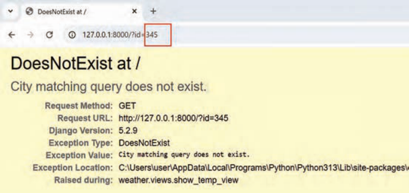
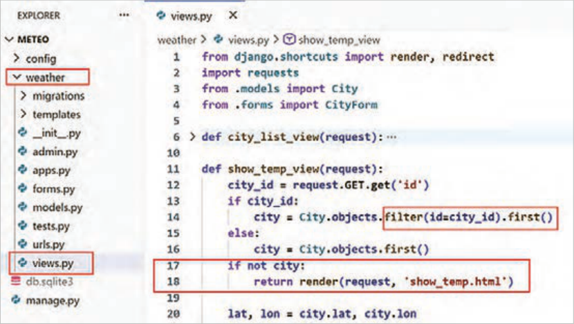
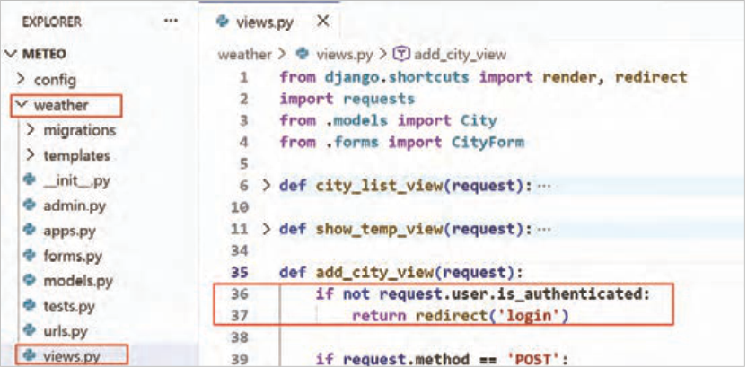

صفحه ۳۲۶
باگ کدنویسی دوم:
اگر کاربر id شهر را در نوار آدرس مرورگر، دستی تغییر دهد و id وارد شده در پایگاهداده وجود نداشته باشد، در صفحه اصلی سایت خطایی همانند شکل 76 نمایش داده میشود.

شکل 76 خطا در صورت اشتباه بودن آیدی شهر
راهحل باگ اول و دوم: برای رفع این ایراد، کد show_temp_view را همانند شکل 77 تغییر دهید.

شکل 77 رفع ایراد کد
صفحه ۳۲۷
توضیحات کدها:
خط 14: بهجای استفاده از تابع get از تابع filter و first استفاده شده است. تابع get در صورتی خطا میدهد که مقدار موردنظر در دیتابیس وجود نداشته باشد. اما تابع filter این رفتار را ندارد و باعث بروز خطا نخواهد شد. پس باگ دوم را پوشش میدهد.
خط 17: درصورتیکه city مقدار نداشته باشد، درخواست به API آبوهوا ارسال نمیشود و مستقیمًا show_temp.html نمایش داده میشود. این خط نیز باگ اول را پوشش میدهد، قبل از اصلاح کدها اگر هیچ شهری در دیتابیس وجود نداشت، مقدار city برابر None میشد. پس هنگام دریافت lat کد به خطا میخورد. با تغییراتی که اعمال شد، این باگ برطرف شده است.
باگ امنیتی:
اگر کاربر عضو سایت نباشد، اما آدرس صفحه افزودن شهر و حذف شهرها را داشته باشد، بدون login در سایت میتواند، شهر اضافه کرده و یا شهر حذف نماید.
راهحل باگ امنیتی: برای رفع این ایراد، کد add_city_view را همانند شکل 78 تغییر دهید.

شکل 78 رفع باگ امنیتی کد
توضیحات کدها:
خط 36: درصورتیکه کاربر login نکرده باشد، در خط بعدی به صفحه login منتقل خواهد شد. همین کد را میتوانید برای delete_city_view هم استفاده کنید.
با این تغییرات، اگر کاربر login نباشد؛ ولی آدرس افزودن شهر و حذف شهر را در مرورگر وارد کند، به صفحه login منتقل خواهد شد.
کنجکاوی
بررسی کنید چه موارد دیگری میتواند این پروژه را بهبود دهد.
صفحه ۳۲۸
ارزشیابی شایستگی توسعه وب اپلیکیشن
استاندارد عملکرد کار: هنرجو بتواند با ساخت Model در جنگو و استفاده از فرم های HTML ارتباط با پایگاه داده را پیادهسازی کند و اطلاعاتی که کاربران وارد میکنند را در جداول ذخیره و بازیابی نماید.
نمره
شرایط انجام کار (ابزار،مواد، تجهیزات،
ابزارهای
نتایج
ردیف
مراحل کار
استاندارد (شاخصها/داوری/نمرهدهی)
کسب
زمان، مکان و ...)
ارزشیابی
ممکن شده
توضیح تفاوت بین ساختار پایگاهداده و جداول آن. شرح وظیفه و اهمیت ORM در جنگو.
شناخت اجزای اصلی پنل مدیریت جنگو و کاربرد آن. موفقیت در تعریف صحیح مدل City با فیلدهای لازم (مانند نام شهر، دما و …). کار با ORM: نوشتن
3
کوئریهای ساده با ORM برای خواندن (مثًلا City.objects.all()) دادهها.
موفقیت در ثبت City در پنل ادمین و امکان مشاهده، افزودن و ویرایش دادهها از طریق آن وارد کردن چند رکورد نمونه (چند شهر) به جدول از طریق پنل ادمین.
مشاهده انجام کنجکاویها انجام کار با چند روش عملی
DE: VS Code PostgreSQL فریمورک
پایگاهداده، ORM و پنل
پرسش
1
موفقیت در تعریف صحیح مدل City با فیلدهای لازم (مانند نام شهر، دما و
جنگو رایانه شخصی یا لپتاپ با سیستم عامل
مدیریت
کتبی …). کار با ORM: نوشتن کوئریهای ساده با ORM برای خواندن (مثًلا
زمان 25 دقیقه مکان سایت رایانه
آزمون
City.objects.all()) دادهها.
شفاهی
2
موفقیت در ثبت City در پنل ادمین و امکان مشاهده، افزودن و ویرایش دادهها از طریق آن وارد کردن چند رکورد نمونه (چند شهر) به جدول از طریق پنل ادمین.
توضیح تفاوت بین ساختار پایگاهداده و جداول آن. شرح وظیفه و اهمیت ORM در جنگو.
1
شناخت اجزای اصلی پنل مدیریت جنگو و کاربرد آن شناخت نقش views در پردازش درخواستها و ارسال پاسخ. درک نحوه ارسال داده از view به template (قالب HTML) آشنایی با مفاهیم اولیه تعامل کاربر (مانند کلیک روی لینک). ایجاد یک view و template برای نمایش لیستی از نام شهرها که از پایگاهداده خوانده شدهاند. پیادهسازی
3
مکانیزم انتخاب شهر (مثلاً با لینک یا فرم). ایجاد یک view که شهر انتخاب شده را دریافت کند. نمایش دمای مربوط به شهر انتخاب شده در صفحه.
مشاهده تعریف URLهای مناسب برای دسترسی به این قابلیتها.
عملی
کار با دادهها و نمایش
فریمورک جنگو رایانه شخصی یا لپتاپ با پرسش
2
ایجاد یک view و template برای نمایش لیستی از نام شهرها که از
اطلاعات
سیستم عامل زمان 25 دقیقه مکان سایت کتبی
پایگاهداده خوانده شدهاند. پیادهسازی مکانیزم انتخاب شهر (مثلاً با لینک یا
رایانه
آزمون فرم). ایجاد یک view که شهر انتخاب شده را دریافت کند.
2
شفاهی نمایش دمای مربوط به شهر انتخاب شده در صفحه. تعریف URLهای مناسب برای دسترسی به این قابلیتها.
توضیح نقش views در پردازش درخواستها و ارسال پاسخ توضیح نحوه ارسال داده از view به template (قالب HTML) توضیح مفاهیم اولیه
1
تعامل کاربر (مانند کلیک روی لینک).
توضیح با فرایند احراز هویت (Login/Logout) در جنگو توضیح مفهوم سطوح دسترسی (Permissions) و چگونگی اعمال آنها شناخت مخاطرات امنیتی دسترسیهای غیرمجاز راهاندازی صحیح سیستم ورود کاربران.
3
اطمینان از اینکه صفحات افزودن و حذف شهر فقط برای کاربران وارد شده (عضو سایت) قابل دسترسی باشند موفقیت در پیادهسازی قابلیت افزودن شهر مشاهده جدید و حذف شهر موجود، فقط توسط کاربران وارد شده انجام کنجکاوی ها عملی
DE: VS Code PostgreSQL فریمورک
احراز هویت و مدیریت
پرسش
3
جنگو رایانه شخصی یا لپتاپ با سیستم عامل
راهاندازی صحیح سیستم ورود کاربران. اطمینان از اینکه صفحات افزودن و
دسترسیها
کتبی
زمان 25 دقیقه مکان سایت رایانه
حذف شهر فقط برای کاربران وارد شده (عضو سایت) قابل دسترسی باشند آزمون
2
موفقیت در پیادهسازی قابلیت افزودن شهر جدید و حذف شهر موجود، فقط شفاهی توسط کاربران وارد شده.
توضیح با فرایند احراز هویت (Login/Logout) در جنگو. توضیح مفهوم سطوح دسترسی (Permissions) و چگونگی اعمال آنها. توضیح مخاطرات
1
امنیتی و دسترسیهای غیرمجاز راهاندازی صحیح سیستم ورود کاربران.
صفحه ۳۲۹
شناسایی انواع باگهای کدنویسی (منطقی، اجرایی) درک اصول اولیه امنیت وب (مانند جلوگیری از تزریق کد، حملات CSRF و …).
آشنایی با مفاهیم اولیه بهینهسازی کد و عملکرد.
رفع باگ ۱ (جدول خالی): پیادهسازی منطق صحیح در view یا template برای مدیریت حالتی که جدول City خالی است، بدون ایجاد خطا. رفع باگ ۲ (تغییر ID در URL): پیادهسازی بررسی صحت id شهر
3
در view قبل از تلاش برای نمایش اطلاعات آن، جهت جلوگیری از خطا یا نمایش اطلاعات نادرست.
رفع باگ امنیتی (دسترسی غیرمجاز): اطمینان کامل از اینکه هیچ کاربری بدون Login نمیتواند به صفحات افزودن/حذف شهر دسترسی پیدا کند و مشاهده عملیات را انجام دهد.
عملی
DE: VS Code PostgreSQL فریمورک
ارائه کد تمیزتر و کارآمدتر (در صورت امکان، بسته به سطح دو
رفع اشکالات و بهینهسازی
پرسش
4
جنگو رایانه شخصی یا لپتاپ با سیستم عامل
امنیتی
کتبی رفع باگ ۱ (جدول خالی): پیادهسازی منطق صحیح در view یا template
زمان 30دقیقه مکان سایت رایانه
آزمون برای مدیریت حالتی که جدول City خالی است، بدون ایجاد خطا رفع شفاهی باگ ۲ (تغییر ID در URL): پیادهسازی بررسی صحت id شهر در view قبل از تلاش برای نمایش اطلاعات آن، جهت جلوگیری از خطا یا نمایش
2
اطلاعات نادرست.
رفع باگ امنیتی (دسترسی غیرمجاز): اطمینان کامل از اینکه هیچ کاربری بدون Login نمیتواند به صفحات افزودن/حذف شهر دسترسی پیدا کند و عملیات را انجام دهد.
شناسایی انواع باگهای کدنویسی (منطقی، اجرایی) درک اصول اولیه امنیت وب (مانند جلوگیری از تزریق کد، حملات CSRF و …).
1
آشنایی با مفاهیم اولیه بهینهسازی کد و عملکرد.
شایستگیهای غیر فنی، ایمنی،
احراز همه شایستگیهای غیرفنی2
بهداشت، توجهات زیست محیطی و نگرش:
عدم احراز هر یک از شایستگیهای غیرفنی1 بلی
ارزشیابی کار (شایستگی انجام کار)
خیر
توضیحات:
1 معیار شایستگی انجام کار:
کسب حداقل نمره 2 از مراحل 2 و 3 (مراحل بحرانی) کسب حداقل نمره 2 از بخش شایستگیهای غیرفنی، ایمنی، بهداشت، توجهات زیستمحیطی و نگرش کسب حداقل میانگین 2 از مراحل کار
2 تعریف سطوح شایستگی: صرفنظر از اینکه یک تکلیف کاری در چه سطحی از صلاحیت حرفهای انجام میشود، در هر محیط کاری ممکن است انجام هر کار با کیفیت مشخصی مورد انتظار باشد. سطح شایستگی انجام کار، معیار اساسی ارزشیابی است.
مهارت (سطح سه): ماهر و قادر به آموزش و هدایت دیگران، توانایی برنامهریزی و تحلیل، پاسخگویی در برابر کارهای خود، سروکار داشتن با سطح وسیعی از کارها و فعالیتها تسلط (سطح چهار): خبرگی در انجام کار و آموزش دیگران، ایجاد نوآوری، سازگاری، عیبیابی، هدایت و راهنمایی دیگران.
Page 326
Coding bug two:
If the user manually changes the city’s id in the browser address bar and the entered id does not exist in the database, an error like Figure 76 is shown on the site’s home page.
Figure 76 error when the city id is wrong
Solution for bugs one and two: To fix this flaw, change the show_temp_view code as in Figure 77.
Figure 77 fixing the code flaw
Page 327
Code notes:
Line 14: Instead of using the get function, the filter and first functions have been used. The get function raises an error if the desired value does not exist in the database. But the filter function does not have this behavior and will not cause an error. So it covers bug two.
Line 17: If city has no value, the request is not sent to the weather API and show_temp.html is displayed directly. This line also covers bug one; before the codes were corrected, if no city existed in the database, the value of city became None. So when getting lat the code hit an error. With the changes that were applied, this bug has been fixed.
Security bug:
If the user is not a site member, but has the address of the add-city and delete-cities pages, without a login on the site they can add a city or delete a city.
Solution for the security bug: To fix this flaw, change the add_city_view code as in Figure 78.
Figure 78 fixing the code security bug
Code notes:
Line 36: If the user has not login, on the next line they will be taken to the login page. You can use the same code for delete_city_view as well.
With these changes, if the user is not login but enters the add-city and delete-city addresses in the browser, they will be taken to the login page.
Try this
Examine what other things could improve this project.
Page 328
Assessment of web application development competency
Performance standard for the work: The student should be able, by building a Model in Django and using HTML forms, to implement connection with the database and store and retrieve the information that users enter in the tables.
Score
Conditions for doing the work (tools, materials, equipment,
Tools
Results
Row
Steps
Standard (indicators / judging / scoring)
Earned
time, place, and …)
Assessment
Made possible
Explain the difference between the structure of a database and its tables. Describe the role and importance of ORM in Django.
Recognize the main parts of the Django admin panel and their use. Success in correctly defining the City model with the needed fields (such as city name, temperature, and …). Working with ORM: writing
3
simple queries with ORM to read data (for example City.objects.all()).
Success in registering City in the admin panel and being able to view, add, and edit data through it Entering a few sample records (a few cities) into the table through the admin panel.
Observation Carry out the Try this tasks Do the work with several practical methods
DE: VS Code PostgreSQL فریمورک
Database, ORM, and admin
Question
1
Success in correctly defining the City model with the needed fields (such as city name, temperature, and
Django Personal computer or laptop with operating system
panel
Written …). Working with ORM: writing simple queries with ORM to read (for example
Time 25 minutes Place computer site
Test
City.objects.all()) دادهها.
Oral
2
Success in registering City in the admin panel and being able to view, add, and edit data through it Entering a few sample records (a few cities) into the table through the admin panel.
Explain the difference between the structure of a database and its tables. Describe the role and importance of ORM in Django.
1
Recognize the main parts of the Django admin panel and their use Recognize the role of views in processing requests and sending responses. Understand how data is sent from the view to the template (HTML template) Become familiar with basic ideas of user interaction (such as clicking a link). Create a view and a template to display a list of city names that have been read from the database. Implement
3
a city-selection mechanism (for example with a link or a form). Create a view that receives the selected city. Display the temperature related to the selected city on the page.
Observation Define suitable URLs for access to these features.
Practical
Working with data and displaying
Django framework Personal computer or laptop with Question
2
Create a view and a template to display a list of city names that have been
information
operating system Time 25 minutes Place computer site Written
read from the database. Implement a city-selection mechanism (for example with a link or
computer
Test form). Create a view that receives the selected city.
2
Oral Display the temperature related to the selected city on the page. Define suitable URLs for access to these features.
Explain the role of views in processing requests and sending responses Explain how data is sent from the view to the template (HTML template) Explain basic ideas of
1
user interaction (such as clicking a link).
Explain the authentication process (Login/Logout) in Django Explain the idea of access levels (Permissions) and how to apply them Recognize the security risks of unauthorized access Correctly set up the user login system.
3
Make sure that the add-city and delete-city pages are accessible only for signed-in users (site members) Success in implementing the ability to add a new city Observation and delete an existing city, only by signed-in users Carry out the Try this tasks Practical
DE: VS Code PostgreSQL فریمورک
Authentication and managing
Question
3
Django Personal computer or laptop with operating system
access
Written
Time 25 minutes Place computer site
Make sure that the add-city and delete-city pages are accessible only for signed-in users (site members) Test
2
Success in implementing the ability to add a new city and delete an existing city, only Oral by signed-in users.
Explain the authentication process (Login/Logout) in Django. Explain the idea of access levels (Permissions) and how to apply them. Explain security
1
risks and unauthorized access Correctly set up the user login system.
Page 329
Identify types of coding bugs (logical, runtime) Understand basic principles of web security (such as preventing code injection, CSRF attacks, and …).
Become familiar with basic ideas of code and performance optimization.
Fix bug 1 (empty table): Implement correct logic in the view or template to handle the case when the City table is empty, without causing an error. Fix bug 2 (changing the ID in the URL): Implement checking that the city’s id is valid
3
in the view before trying to display its information, in order to prevent an error or showing incorrect information.
Fix the security bug (unauthorized access): Make completely sure that no user without a Login can gain access to the add/delete city pages and Observation carry out the operations.
Practical
DE: VS Code PostgreSQL فریمورک
Present cleaner and more efficient code (if possible, depending on the two level
Fixing flaws and optimization
Question
4
Django Personal computer or laptop with operating system
security
Written Fix bug 1 (empty table): Implement correct logic in the view or template
Time 30 minutes Place computer site
Test to handle the case when the City table is empty, without causing an error Fix Oral bug 2 (changing the ID in the URL): Implement checking that the city’s id is valid in the view before trying to display its information, in order to prevent an error or showing
2
incorrect information.
Fix the security bug (unauthorized access): Make completely sure that no user without a Login can gain access to the add/delete city pages and carry out the operations.
Identify types of coding bugs (logical, runtime) Understand basic principles of web security (such as preventing code injection, CSRF attacks, and …).
1
Become familiar with basic ideas of code and performance optimization.
Non-technical competencies, safety,
Achieve all non-technical competencies2
hygiene, environmental considerations, and attitude:
Failing to achieve any of the non-technical competencies1 Yes
Work assessment (competency in doing the work)
No
Explanation:
1 Criterion for competency in doing the work:
Earn at least score 2 from stages 2 and 3 (critical stages) Earn at least score 2 from the non-technical competencies, safety, hygiene, environmental considerations, and attitude section Earn at least an average of 2 from the work stages
2 Definition of competency levels: Regardless of the level of professional qualification at which a work task is performed, in every workplace a certain quality of doing each job may be expected. The level of competency in doing the work is the basic criterion of assessment.
Skill (level three): Skilled and able to train and guide others, able to plan and analyze, accountable for their own work, dealing with a wide range of jobs and activities Mastery (level four): Expertise in doing the work and training others, creating innovation, adapting, troubleshooting, leading and guiding others.